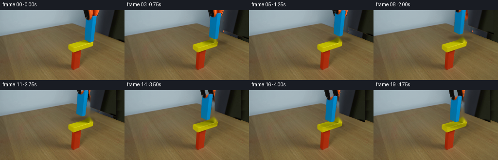
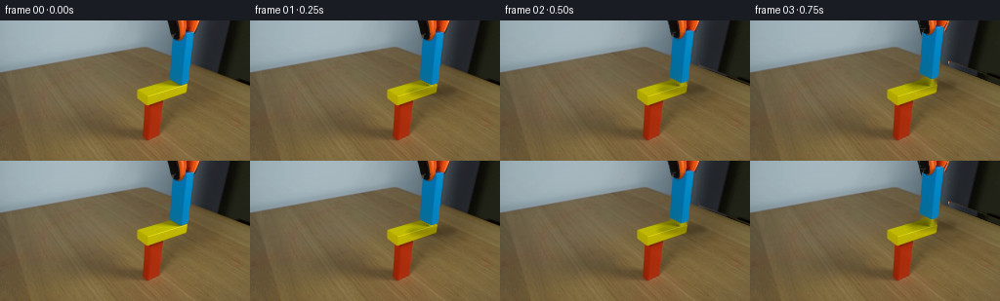
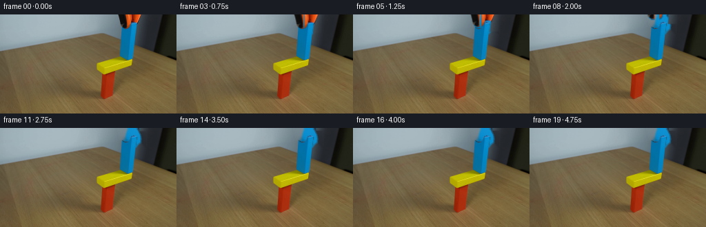
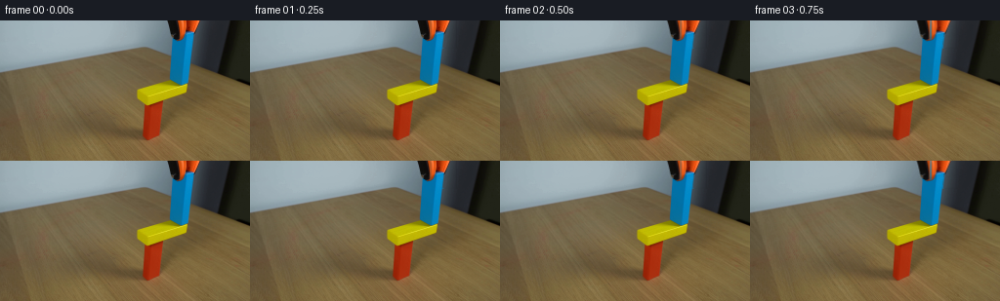

CODING AGENTS AS PIXEL WORLD MODELS
traex/DeepSeek-V4.1-Flash · 0181
点击播放 · 原生 RGB 像素
逐轮保存的候选
回放视频、检查图与代码变化。
每份候选均可单独播放。实际图片检查记录在下方工具轨迹中。
候选 01播放与检查图
点击播放 · 原生 RGB 像素


展开代码变化
--- 上一保存版本
+++ 本次保存版本
@@ -0,0 +1,202 @@
+"""Generate the fixed-camera block placement sequence."""
+
+from pathlib import Path
+
+import cv2
+import numpy as np
+from PIL import Image, ImageFilter
+
+from artifact_io import save
+
+
+CASE_DIR = Path(__file__).resolve().parent
+W, H, N, FPS = 256, 144, 20, 4
+
+
+def smoothstep(t):
+ t = np.clip(t, 0.0, 1.0)
+ return t * t * (3.0 - 2.0 * t)
+
+
+def ease(t):
+ t = np.clip(t, 0.0, 1.0)
+ return 0.5 - 0.5 * np.cos(np.pi * t)
+
+
+def translate_layer(layer, x, y):
+ """Translate a straight-alpha RGBA layer with subpixel accuracy."""
+ matrix = np.float32([[1, 0, x], [0, 1, y]])
+ return cv2.warpAffine(
+ layer,
+ matrix,
+ (W, H),
+ flags=cv2.INTER_LINEAR,
+ borderMode=cv2.BORDER_CONSTANT,
+ borderValue=(0, 0, 0, 0),
+ )
+
+
+def over(base, layer):
+ rgb = layer[..., :3].astype(np.float32)
+ alpha = layer[..., 3:4].astype(np.float32) / 255.0
+ return np.clip(rgb * alpha + base.astype(np.float32) * (1.0 - alpha), 0, 255).astype(np.uint8)
+
+
+def build_assets():
+ frame = np.array(Image.open(CASE_DIR / "first_frame.png").convert("RGB"))
+ rgb = frame.astype(np.float32)
+ hsv = cv2.cvtColor(frame, cv2.COLOR_RGB2HSV)
+ r, g, b = frame[..., 0], frame[..., 1], frame[..., 2]
+
+ # The blue wooden block and its cyan face are the only strongly blue pixels.
+ blue_core = (
+ (b.astype(np.int16) > r.astype(np.int16) + 45)
+ & (b.astype(np.int16) > g.astype(np.int16) + 18)
+ & (b > 65)
+ )
+ blue_mask = np.zeros((H, W), np.uint8)
+ blue_mask[8:68, 168:204] = blue_core[8:68, 168:204]
+ blue_mask = cv2.morphologyEx(blue_mask, cv2.MORPH_CLOSE, np.ones((3, 3), np.uint8))
+ contours, _ = cv2.findContours(blue_mask, cv2.RETR_EXTERNAL, cv2.CHAIN_APPROX_SIMPLE)
+ contour = max(contours, key=cv2.contourArea)
+ hull = cv2.convexHull(contour)
+ block_polygon = hull.reshape(-1, 2)
+ block_mask = np.zeros((H, W), np.uint8)
+ cv2.fillPoly(block_mask, [block_polygon], 255)
+ block_mask = cv2.GaussianBlur(block_mask, (3, 3), 0.45)
+ block_rgba = np.dstack((frame, block_mask))
+
+ # Keep the two gripper jaws as separate, independently animated pieces.
+ dark = (np.max(frame, axis=2) < 78) & ((np.max(frame, axis=2) - np.min(frame, axis=2)) < 32)
+ upper = np.zeros((H, W), np.uint8)
+ upper[0:23, 169:208] = dark[0:23, 169:208]
+ upper_mask = cv2.GaussianBlur(upper * 255, (3, 3), 0.5)
+ upper_rgba = np.dstack((frame, upper_mask))
+
+ lower = np.zeros((H, W), np.uint8)
+ lower[0:68, 203:256] = dark[0:68, 203:256]
+ lower_mask = cv2.GaussianBlur(lower * 255, (3, 3), 0.5)
+ lower_rgba = np.dstack((frame, lower_mask))
+
+ # Clear the moving foreground from the fixed plate. The empty area is filled
+ # from nearby unobstructed pixels and then lightly textured to retain wood grain.
+ background = frame.copy()
+ fill_mask = np.zeros((H, W), np.uint8)
+ cv2.fillPoly(fill_mask, [block_polygon], 255)
+ fill_mask = cv2.dilate(fill_mask, np.ones((3, 3), np.uint8))
+ background = cv2.inpaint(cv2.cvtColor(background, cv2.COLOR_RGB2BGR), fill_mask, 4, cv2.INPAINT_TELEA)
+ background = cv2.cvtColor(background, cv2.COLOR_BGR2RGB)
+
+ # The grabber is attached at the top edge. Reconstruct the small region it
+ # covers in later frames using the repeated plate/background texture above.
+ source = frame[0:21, 195:256].astype(np.float32)
+ for y in range(0, 68):
+ for x in range(203, 256):
+ if dark[y, x]:
+ sx = min(255, max(195, x))
+ sy = y % 21
+ background[y, x] = source[sy, sx - 195].astype(np.uint8)
+
+ return frame, background, block_rgba, upper_rgba, lower_rgba, block_polygon
+
+
+def path_state(index):
+ """Return blue block offset and jaw opening for each of the 20 frames."""
+ t = index / (N - 1)
+
+ if index == 0:
+ return 0.0, 0.0, 0.0
+
+ # Lift vertically while still holding the block.
+ if index <= 5:
+ u = ease((index - 1) / 4.0)
+ return 0.0, -12.0 * u, 0.0
+
+ # Carry left over the yellow support with a restrained ballistic arc.
+ if index <= 11:
+ u = ease((index - 5) / 6.0)
+ x = -17.0 * u
+ y = -12.0 - 4.0 * np.sin(np.pi * u)
+ return x, y, 0.0
+
+ # Lower it until the underside makes contact with the yellow block.
+ if index <= 16:
+ u = ease((index - 11) / 5.0)
+ return -17.0, -12.0 + 12.0 * u, 0.0
+
+ # Release jaws and make a tiny, damped settling correction.
+ u = smoothstep((index - 16) / 3.0)
+ settle = 0.75 * np.sin(3.0 * np.pi * u) * (1.0 - u)
+ return -17.0, settle, 1.5 * u
+
+
+def render_shadow(background, x, y, lift, release):
+ """Soft contact shadow under the blue block."""
+ shadow = np.zeros((H, W), np.float32)
+ cx = 185.0 + x + 1.5
+ cy = 72.0 + y
+ cv2.ellipse(
+ shadow,
+ (int(round(cx)), int(round(cy))),
+ (25, max(2, int(5 - lift / 7.0))),
+ 0,
+ 0,
+ 360,
+ 1.0,
+ -1,
+ cv2.LINE_AA,
+ )
+ shadow = cv2.GaussianBlur(shadow, (0, 0), 2.2)
+ strength = float(np.clip(0.24 - lift / 180.0 + release * 0.02, 0.06, 0.24))
+ result = background.astype(np.float32)
+ result *= (1.0 - strength * shadow[..., None])
+ return np.clip(result, 0, 255).astype(np.uint8)
+
+
+def generate_frames():
+ first, background, blue, jaw_upper, jaw_lower, _ = build_assets()
+ frames = []
+
+ for index in range(N):
+ if index == 0:
+ frames.append(first.copy())
+ continue
+
+ x, y, release = path_state(index)
+ canvas = background.copy()
+
+ # The left jaw remains closed around the top of the block. The right jaw
+ # opens only after the block has reached its resting position.
+ upper = translate_layer(jaw_upper, x, y)
+ lower = translate_layer(jaw_lower, x + release, y)
+ block = translate_layer(blue, x, y)
+
+ # Paint from back to front. The block overlaps the background and the
+ # gripper jaws overlap its top corners.
+ shadow_lift = max(0.0, -y - 12.0)
+ canvas = render_shadow(canvas, x, y, shadow_lift, release)
+ canvas = over(canvas, block)
+ canvas = over(canvas, upper)
+ canvas = over(canvas, lower)
+
+ # A small brightness modulation on moving pixels makes the motion read
+ # as real footage without adding any global flicker.
+ if index <= 16:
+ motion = 0.994 + 0.006 * np.cos(index * 1.3)
+ canvas = np.clip(canvas.astype(np.float32) * motion, 0, 255).astype(np.uint8)
+
+ frames.append(canvas)
+
+ frames = np.stack(frames).astype(np.uint8)
+ assert frames.shape == (N, H, W, 3)
+ assert np.array_equal(frames[0], first)
+ return frames
+
+
+def main():
+ frames = generate_frames()
+ save(frames, CASE_DIR)
+
+
+if __name__ == "__main__":
+ main()
候选 02播放与检查图
点击播放 · 原生 RGB 像素


展开代码变化
--- 上一保存版本
+++ 本次保存版本
@@ -1,10 +1,10 @@
-"""Generate the fixed-camera block placement sequence."""
+"""Generate a fixed-camera grasp-release sequence from the supplied frame."""
from pathlib import Path
import cv2
import numpy as np
-from PIL import Image, ImageFilter
+from PIL import Image
from artifact_io import save
@@ -13,19 +13,13 @@
W, H, N, FPS = 256, 144, 20, 4
-def smoothstep(t):
- t = np.clip(t, 0.0, 1.0)
- return t * t * (3.0 - 2.0 * t)
-
-
def ease(t):
t = np.clip(t, 0.0, 1.0)
return 0.5 - 0.5 * np.cos(np.pi * t)
-def translate_layer(layer, x, y):
- """Translate a straight-alpha RGBA layer with subpixel accuracy."""
- matrix = np.float32([[1, 0, x], [0, 1, y]])
+def translate(layer, x, y):
+ matrix = np.float32([[1.0, 0.0, x], [0.0, 1.0, y]])
return cv2.warpAffine(
layer,
matrix,
@@ -39,122 +33,81 @@
def over(base, layer):
rgb = layer[..., :3].astype(np.float32)
alpha = layer[..., 3:4].astype(np.float32) / 255.0
- return np.clip(rgb * alpha + base.astype(np.float32) * (1.0 - alpha), 0, 255).astype(np.uint8)
+ out = rgb * alpha + base.astype(np.float32) * (1.0 - alpha)
+ return np.clip(out, 0, 255).astype(np.uint8)
+
+
+def fill_component(mask, kernel_size=3):
+ kernel = np.ones((kernel_size, kernel_size), np.uint8)
+ clean = cv2.morphologyEx(mask, cv2.MORPH_CLOSE, kernel, iterations=2)
+ contours, _ = cv2.findContours(clean, cv2.RETR_EXTERNAL, cv2.CHAIN_APPROX_SIMPLE)
+ if not contours:
+ return clean
+ filled = np.zeros_like(clean)
+ cv2.drawContours(filled, contours, -1, 255, cv2.FILLED)
+ return cv2.GaussianBlur(filled, (3, 3), 0.55)
def build_assets():
frame = np.array(Image.open(CASE_DIR / "first_frame.png").convert("RGB"))
- rgb = frame.astype(np.float32)
- hsv = cv2.cvtColor(frame, cv2.COLOR_RGB2HSV)
- r, g, b = frame[..., 0], frame[..., 1], frame[..., 2]
+ rgb = frame.astype(np.int16)
+ r, g, b = rgb[..., 0], rgb[..., 1], rgb[..., 2]
+ value = rgb.max(axis=2)
+ spread = value - rgb.min(axis=2)
+ yy, xx = np.mgrid[0:H, 0:W]
- # The blue wooden block and its cyan face are the only strongly blue pixels.
- blue_core = (
- (b.astype(np.int16) > r.astype(np.int16) + 45)
- & (b.astype(np.int16) > g.astype(np.int16) + 18)
- & (b > 65)
+ # The small orange-black grabber at the top center-right is the moving tool.
+ dark = (value < 96) & (spread < 42)
+ orange = (r > 88) & (r > g * 1.28) & (r > b * 1.65) & (g < 125) & (b < 110)
+ tool_roi = (xx >= 168) & (xx < 210) & (yy < 27)
+ tool_core = ((dark | orange) & tool_roi).astype(np.uint8) * 255
+ count, labels, stats, _ = cv2.connectedComponentsWithStats(tool_core)
+ candidates = [i for i in range(1, count) if stats[i, cv2.CC_STAT_AREA] >= 20]
+ tool_id = max(candidates, key=lambda i: stats[i, cv2.CC_STAT_AREA])
+ tool_mask = fill_component((labels == tool_id).astype(np.uint8) * 255)
+
+ # Split at the centerline so the jaws can open independently.
+ left_mask = fill_component(np.where(xx < 185, tool_mask, 0).astype(np.uint8))
+ right_mask = fill_component(np.where(xx >= 185, tool_mask, 0).astype(np.uint8))
+ left_jaw = np.dstack((frame, left_mask))
+ right_jaw = np.dstack((frame, right_mask))
+
+ # Reconstruct the wall and plate hidden behind the tool.
+ removal = cv2.dilate(tool_mask, np.ones((3, 3), np.uint8), iterations=1)
+ background = cv2.inpaint(
+ cv2.cvtColor(frame, cv2.COLOR_RGB2BGR), removal, 3, cv2.INPAINT_TELEA
)
- blue_mask = np.zeros((H, W), np.uint8)
- blue_mask[8:68, 168:204] = blue_core[8:68, 168:204]
- blue_mask = cv2.morphologyEx(blue_mask, cv2.MORPH_CLOSE, np.ones((3, 3), np.uint8))
- contours, _ = cv2.findContours(blue_mask, cv2.RETR_EXTERNAL, cv2.CHAIN_APPROX_SIMPLE)
- contour = max(contours, key=cv2.contourArea)
- hull = cv2.convexHull(contour)
- block_polygon = hull.reshape(-1, 2)
- block_mask = np.zeros((H, W), np.uint8)
- cv2.fillPoly(block_mask, [block_polygon], 255)
- block_mask = cv2.GaussianBlur(block_mask, (3, 3), 0.45)
- block_rgba = np.dstack((frame, block_mask))
-
- # Keep the two gripper jaws as separate, independently animated pieces.
- dark = (np.max(frame, axis=2) < 78) & ((np.max(frame, axis=2) - np.min(frame, axis=2)) < 32)
- upper = np.zeros((H, W), np.uint8)
- upper[0:23, 169:208] = dark[0:23, 169:208]
- upper_mask = cv2.GaussianBlur(upper * 255, (3, 3), 0.5)
- upper_rgba = np.dstack((frame, upper_mask))
-
- lower = np.zeros((H, W), np.uint8)
- lower[0:68, 203:256] = dark[0:68, 203:256]
- lower_mask = cv2.GaussianBlur(lower * 255, (3, 3), 0.5)
- lower_rgba = np.dstack((frame, lower_mask))
-
- # Clear the moving foreground from the fixed plate. The empty area is filled
- # from nearby unobstructed pixels and then lightly textured to retain wood grain.
- background = frame.copy()
- fill_mask = np.zeros((H, W), np.uint8)
- cv2.fillPoly(fill_mask, [block_polygon], 255)
- fill_mask = cv2.dilate(fill_mask, np.ones((3, 3), np.uint8))
- background = cv2.inpaint(cv2.cvtColor(background, cv2.COLOR_RGB2BGR), fill_mask, 4, cv2.INPAINT_TELEA)
background = cv2.cvtColor(background, cv2.COLOR_BGR2RGB)
- # The grabber is attached at the top edge. Reconstruct the small region it
- # covers in later frames using the repeated plate/background texture above.
- source = frame[0:21, 195:256].astype(np.float32)
- for y in range(0, 68):
- for x in range(203, 256):
- if dark[y, x]:
- sx = min(255, max(195, x))
- sy = y % 21
- background[y, x] = source[sy, sx - 195].astype(np.uint8)
+ # The blue block is already seated on the yellow support in frame 00.
+ blue_core = (
+ (b > r + 45)
+ & (b > g + 18)
+ & (b > 65)
+ & (xx >= 168)
+ & (xx < 205)
+ & (yy >= 8)
+ & (yy < 68)
+ )
+ blue_mask = fill_component(blue_core.astype(np.uint8) * 255)
+ blue_block = np.dstack((frame, blue_mask))
- return frame, background, block_rgba, upper_rgba, lower_rgba, block_polygon
+ return frame, background, blue_block, left_jaw, right_jaw
-def path_state(index):
- """Return blue block offset and jaw opening for each of the 20 frames."""
- t = index / (N - 1)
-
- if index == 0:
- return 0.0, 0.0, 0.0
-
- # Lift vertically while still holding the block.
- if index <= 5:
- u = ease((index - 1) / 4.0)
- return 0.0, -12.0 * u, 0.0
-
- # Carry left over the yellow support with a restrained ballistic arc.
- if index <= 11:
- u = ease((index - 5) / 6.0)
- x = -17.0 * u
- y = -12.0 - 4.0 * np.sin(np.pi * u)
- return x, y, 0.0
-
- # Lower it until the underside makes contact with the yellow block.
- if index <= 16:
- u = ease((index - 11) / 5.0)
- return -17.0, -12.0 + 12.0 * u, 0.0
-
- # Release jaws and make a tiny, damped settling correction.
- u = smoothstep((index - 16) / 3.0)
- settle = 0.75 * np.sin(3.0 * np.pi * u) * (1.0 - u)
- return -17.0, settle, 1.5 * u
-
-
-def render_shadow(background, x, y, lift, release):
- """Soft contact shadow under the blue block."""
- shadow = np.zeros((H, W), np.float32)
- cx = 185.0 + x + 1.5
- cy = 72.0 + y
- cv2.ellipse(
- shadow,
- (int(round(cx)), int(round(cy))),
- (25, max(2, int(5 - lift / 7.0))),
- 0,
- 0,
- 360,
- 1.0,
- -1,
- cv2.LINE_AA,
- )
- shadow = cv2.GaussianBlur(shadow, (0, 0), 2.2)
- strength = float(np.clip(0.24 - lift / 180.0 + release * 0.02, 0.06, 0.24))
- result = background.astype(np.float32)
- result *= (1.0 - strength * shadow[..., None])
- return np.clip(result, 0, 255).astype(np.uint8)
+def jaw_state(index):
+ """Seat the held object, then release and withdraw the gripper."""
+ if index <= 3:
+ u = ease((index - 1) / 3.0)
+ return 0.0, 1.25 * u, 0.8 * u
+ if index <= 12:
+ u = ease((index - 3) / 9.0)
+ return -24.0 * u, 1.25 - 23.0 * u, 0.8 + 4.7 * u
+ return -24.0, -21.75, 5.5
def generate_frames():
- first, background, blue, jaw_upper, jaw_lower, _ = build_assets()
+ first, background, blue_block, left_jaw, right_jaw = build_assets()
frames = []
for index in range(N):
@@ -162,40 +115,22 @@
frames.append(first.copy())
continue
- x, y, release = path_state(index)
+ lift, seating, opening = jaw_state(index)
canvas = background.copy()
-
- # The left jaw remains closed around the top of the block. The right jaw
- # opens only after the block has reached its resting position.
- upper = translate_layer(jaw_upper, x, y)
- lower = translate_layer(jaw_lower, x + release, y)
- block = translate_layer(blue, x, y)
-
- # Paint from back to front. The block overlaps the background and the
- # gripper jaws overlap its top corners.
- shadow_lift = max(0.0, -y - 12.0)
- canvas = render_shadow(canvas, x, y, shadow_lift, release)
- canvas = over(canvas, block)
- canvas = over(canvas, upper)
- canvas = over(canvas, lower)
-
- # A small brightness modulation on moving pixels makes the motion read
- # as real footage without adding any global flicker.
- if index <= 16:
- motion = 0.994 + 0.006 * np.cos(index * 1.3)
- canvas = np.clip(canvas.astype(np.float32) * motion, 0, 255).astype(np.uint8)
-
+ canvas = over(canvas, blue_block)
+ canvas = over(canvas, translate(left_jaw, -opening, lift))
+ canvas = over(canvas, translate(right_jaw, opening, lift))
frames.append(canvas)
frames = np.stack(frames).astype(np.uint8)
assert frames.shape == (N, H, W, 3)
+ assert frames.dtype == np.uint8
assert np.array_equal(frames[0], first)
return frames
def main():
- frames = generate_frames()
- save(frames, CASE_DIR)
+ save(generate_frames(), CASE_DIR)
if __name__ == "__main__":
可观测工具轨迹
实际执行的命令与返回图片。
命令 1exit 0
/bin/bash -c "pwd && rg --files -g 'prompt.txt' -g 'GENERATION_RULES.md' -g 'first_frame.png' -g '"'!*.mp4'"'"
命令 2exit 0
/bin/bash -c 'ls -la'
命令 3exit 0
/bin/bash -c 'git status --short'
命令 4exit 0
/bin/bash -c "sed -n '1,220p' prompt.txt"
命令 5exit 0
/bin/bash -c "sed -n '1,240p' GENERATION_RULES.md"
命令 6exit 0
/bin/bash -c "sed -n '1,260p' artifact_io.py"
命令 7exit 127
/bin/bash -c "file first_frame.png && python3 - <<'PY'
from PIL import Image
im=Image.open('first_frame.png')
print(im.size, im.mode)
PY"命令 8exit 0
/bin/bash -c "python3 - <<'PY'
from PIL import Image
import numpy as np
from collections import Counter
im=np.array(Image.open('first_frame.png').convert('RGB'))
print('shape',im.shape)
# coarse color clusters quantized to 16 levels
q=(im//16)*16
c=Counter(map(tuple,q.reshape(-1,3)))
for col,n in c.most_common(30): print(col,n)
# unique exact top
print('exact uniq',len(np.unique(im.reshape(-1,3),axis=0)))
PY"命令 9exit 0
/bin/bash -c "python3 - <<'PY' import cv2 print(cv2.__version__) PY"
命令 10exit 0
/bin/bash -c "python3 - <<'PY'
import cv2, numpy as np
im=cv2.imread('first_frame.png')
hsv=cv2.cvtColor(im,cv2.COLOR_BGR2HSV)
# ranges OpenCV H 0-179
ranges={
'red':[((0,80,50),(12,255,255)),((170,80,50),(179,255,255))],
'yellow':[((18,100,80),(38,255,255))],
'blue':[((85,80,50),(125,255,255))],
'orange':[((8,100,80),(20,255,255))],
'black':[((0,0,0),(179,255,55))],
'cyan':[((80,50,80),(100,255,255))],
}
for name,rs in ranges.items():
m=np.zeros(im.shape[:2],np.uint8)
for lo,hi in rs:m|=cv2.inRange(hsv,np.array(lo),np.array(hi))
n,lab,st,cent=cv2.connectedComponentsWithStats(m)
print('\\n',name,'total',int((m>0).sum()))
for i in np.argsort(st[1:,4])[::-1][:15]+1:
x,y,w,h,a=st[i]
if a>=10:print(f' x{x} y{y} w{w} h{h} a{a} cent{cent[i].round(1)}')
PY"命令 11exit 0
/bin/bash -c "python3 - <<'PY'
from PIL import Image
import numpy as np, cv2
from collections import Counter
im=np.array(Image.open('first_frame.png').convert('RGB'))
hsv=cv2.cvtColor(im,cv2.COLOR_RGB2HSV)
# top colors by saturation, quantized 8
q=(im//8)*8
c=Counter(map(tuple,q.reshape(-1,3)))
print('bright saturated colors')
for col,n in c.most_common():
r,g,b=col
mx=max(col);mn=min(col)
if mx>=100 and mx-mn>=60 and n>=15:
print(col,n)
PY"命令 12exit 0
/bin/bash -c "python3 - <<'PY'
from PIL import Image
import numpy as np, cv2
im=np.array(Image.open('first_frame.png').convert('RGB'))
hsv=cv2.cvtColor(im,cv2.COLOR_RGB2HSV)
for y in range(8,144,8):
print(f'{y:3d}',end=' ')
for x in range(4,256,8):
r,g,b=im[y,x]; h,s,v=hsv[y,x]
if v<45: c='K'
elif s<35: c='G' if v>90 else 'g'
elif h<7 or h>172: c='R'
elif h<18: c='O'
elif h<39: c='Y'
elif h<88: c='G'
elif h<135: c='B'
else: c='P'
print(c,end='')
print()
PY"命令 13exit 0
/bin/bash -c "python3 - <<'PY'
from PIL import Image
import numpy as np
im=np.array(Image.open('first_frame.png').convert('RGB'))
# Print 64x36 coarse mean RGB and classify nearest key palette with custom sample locations
for y0 in range(0,144,4):
row=''
for x0 in range(0,256,4):
a=im[y0:y0+4,x0:x0+4].mean((0,1))
r,g,b=a
if max(a)<45: c='#'
elif r>g*1.5 and r>b*2 and r>90: c='R'
elif r>130 and g>110 and b<70: c='Y'
elif b>g*1.3 and b>r*1.5 and b>80: c='B'
elif r>100 and g<80 and b<50: c='O'
elif max(a)-min(a)<25: c='.'
elif r>g*1.15 and g>b*1.25: c='y'
elif b>r*1.15: c='b'
else: c='o'
row+=c
print(row)
PY"命令 14exit 0
/bin/bash -c "python3 - <<'PY'
from PIL import Image
import numpy as np
im=np.array(Image.open('first_frame.png').convert('RGB'))
# save enlarged crops for pixel inspection via png only (not visual; inspect masks stats)
for name,box in [('right',(140,0,220,80)),('block',(135,75,180,135)),('top',(0,0,256,60))]:
x0,y0,x1,y1=box
Image.fromarray(im[y0:y1,x0:x1]).resize(((x1-x0)*8,(y1-y0)*8),Image.Resampling.NEAREST).save('.tmp/'+name+'.png')
# print RGB on selected vertical/horiz lines
for y in [20,30,40,50,60,70,80,90,100,110,120,130]:
print('y',y, [(x,tuple(im[y,x])) for x in [140,150,160,170,180,185,190,200,210,220,230,240,250]])
PY"命令 15exit 0
/bin/bash -c "python3 - <<'PY'
import cv2, numpy as np
im=cv2.imread('first_frame.png')
# print connected components of bright cyan and yellow/red masks with looser hsv
hsv=cv2.cvtColor(im,cv2.COLOR_BGR2HSV)
for name,lo,hi in [('cyan',(80,100,80),(105,255,255)),('blue',(95,100,40),(130,255,255)),('yellow',(22,100,100),(38,255,255)),('red',(0,100,60),(10,255,255))]:
m=cv2.inRange(hsv,np.array(lo),np.array(hi))
n,l,st,ce=cv2.connectedComponentsWithStats(m)
print(name)
for i in range(1,n):
x,y,w,h,a=st[i]
if a>5: print(x,y,w,h,a,ce[i])
PY"命令 16exit 0
/bin/bash -c "python3 - <<'PY'
import cv2, numpy as np
im=cv2.imread('first_frame.png')
# compare exact regions; print simple ascii in x 160-210 y 0-75 based on cyan/blue/red/dark/background
hsv=cv2.cvtColor(im,cv2.COLOR_BGR2HSV)
for y in range(0,76,2):
s=''
for x in range(160,212,2):
h,sa,v=hsv[y,x]; b,g,r=im[y,x]
if 95<=h<=130 and sa>100 and v>40:c='C'
elif h<10 and sa>100 and v>60:c='R'
elif v<45:c='#'
elif sa<40:c='.'
elif r>120 and g>100 and b<80:c='Y'
else:c='?'
s+=c
print(f'{y:02d} {s}')
PY"命令 17exit 0
/bin/bash -c "python3 - <<'PY'
import cv2, numpy as np
im=cv2.imread('first_frame.png')
hsv=cv2.cvtColor(im,cv2.COLOR_BGR2HSV)
for name,lo,hi in [('yellow',(22,100,100),(38,255,255)),('red',(0,100,60),(10,255,255)),('cyan',(80,100,80),(105,255,255))]:
m=cv2.inRange(hsv,np.array(lo),np.array(hi))
print('\\n',name)
for y in range(0,144,2):
xs=np.where(m[y]>0)[0]
if len(xs):
# runs
runs=[]; st=xs[0];pr=xs[0]
for x in xs[1:]:
if x>pr+1:runs.append((st,pr));st=x
pr=x
runs.append((st,pr))
print(f'{y:3d}:',runs)
PY"命令 18exit 0
/bin/bash -c "python3 - <<'PY'
from PIL import Image
import numpy as np
im=np.array(Image.open('first_frame.png').convert('RGB'))
for y in range(50,76):
print('y',y,[(x,tuple(im[y,x])) for x in range(168,203,3)])
PY"命令 19exit 0
/bin/bash -c "python3 - <<'PY'
from PIL import Image
import numpy as np
im=np.array(Image.open('first_frame.png').convert('RGB'))
# coarse 2x2 chars, local hue
for y in range(0,144,2):
s=''
for x in range(128,224,2):
a=im[y:y+2,x:x+2].mean((0,1)); r,g,b=a
if max(a)<30:c=' '
elif b>r*2 and b>g*1.2 and b>80:c='C' # cyan
elif b>r*1.5 and b>g*1.1 and b>50:c='c'
elif r>140 and g>110 and b<60:c='Y'
elif r>100 and g<75 and b<40:c='R'
elif max(a)-min(a)<30:c='.'
elif r>g*1.1 and g>b*1.2:c='y'
elif b>r*1.2:c='b'
else:c='o'
s+=c
print(f'{y:03d} {s}')
PY"命令 20exit 0
/bin/bash -c "python3 - <<'PY'
from PIL import Image
import numpy as np
im=np.array(Image.open('first_frame.png').convert('RGB'))
for y in [82,84,86,88,90,100,120,124]:
print(y,[(x,tuple(im[y,x])) for x in range(138,174,2)])
PY"命令 21exit 0
/bin/bash -c "python3 - <<'PY'
from PIL import Image
import numpy as np
im=np.array(Image.open('first_frame.png').convert('RGB'))
# RGB vs x for y 67-70 identify left right exact block extent; values by hue class
for y in [64,65,66,67,68,69,70,72,74,76,78,80,82,84,86,88]:
# classify strong yellow/red
arr=[]
for x in range(100,205):
r,g,b=im[y,x]
if r>120 and g>100 and b<50: c='Y'
elif r>110 and g<100 and b<50: c='R'
elif r>85 and g>70 and b>40 and max(im[y,x])-min(im[y,x])<55:c='.'
else:c='?'
arr.append(c)
# only segments in block area
s=''.join(arr)
print(y,s)
PY"命令 22exit 0
/bin/bash -c "python3 - <<'PY'
import cv2, numpy as np
im=cv2.imread('first_frame.png')
hsv=cv2.cvtColor(im,cv2.COLOR_BGR2HSV)
# Segment saturated colors, report bounding boxes and per-row runs for selected masks
masks={
'red':((0,100,40),(12,255,255)),
'yellow':((20,100,80),(42,255,255)),
'blue':((90,80,40),(135,255,255)),
'orange':((5,120,60),(20,255,255)),
'dark':((0,0,0),(179,255,50)),
}
for name,(lo,hi) in masks.items():
m=cv2.inRange(hsv,np.array(lo),np.array(hi))
ys,xs=np.where(m>0)
print(name, 'bbox', (xs.min(),ys.min(),xs.max(),ys.max()), 'count',len(xs))
# column and row extent counts
if name in ('red','blue'):
for y in range(0,144,4):
xx=np.where(m[y]>0)[0]
if len(xx): print(' ',y, int(xx.min()),int(xx.max()),len(xx))
PY"命令 23exit -1
/bin/bash -c "python3 - <<'PY'
from PIL import Image
import numpy as np
im=np.array(Image.open('first_frame.png').convert('RGB'))
# list pixels close to blue mask and background color statistics around it
for name,box in [('blue',(165,0,210,75)),('yellow',(120,55,205,95)),('red',(135,75,180,130)),('dark',(200,0,256,70))]:
x0,y0,x1,y1=box
a=im[y0:y1,x0:x1].reshape(-1,3)
print(name, 'mean',a.mean(0).round(1),'std',a.std(0).round(1),'min',a.min(0),'max',a.max(0))
# kmeans colors maybe
from sklearn.cluster import KMeans
k=KMeans(n_clusters=min(6,len(a)),random_state=0,n_init=3).fit(a)
print([(c.round().astype(int).tolist(),int(n)) for c,n in zip(k.cluster_centers_,np.bincount(k.labels_))])
PY"命令 24exit -1
/bin/bash -c "pwd; python3 - <<'PY'
from PIL import Image
import numpy as np
im=np.array(Image.open('first_frame.png').convert('RGB'))
for name,box in [('blue',(165,0,210,75)),('yellow',(120,55,205,95)),('red',(135,75,180,130)),('dark',(200,0,256,70))]:
x0,y0,x1,y1=box
a=im[y0:y1,x0:x1].reshape(-1,3)
print(name, 'mean',a.mean(0).round(1),'std',a.std(0).round(1),'min',a.min(0),'max',a.max(0))
PY"命令 25exit 0
/bin/bash -c 'pwd && ls -la'
命令 26exit 0
/bin/bash -c "python3 - <<'PY'
from PIL import Image
import numpy as np
im=np.array(Image.open('first_frame.png').convert('RGB'))
for name,box in [('blue',(165,0,210,75)),('yellow',(120,55,205,95)),('red',(135,75,180,130)),('dark',(200,0,256,70))]:
x0,y0,x1,y1=box
a=im[y0:y1,x0:x1].reshape(-1,3)
print(name, 'mean',a.mean(0).round(1),'std',a.std(0).round(1),'min',a.min(0),'max',a.max(0))
PY"命令 27exit -1
/bin/bash -c "python3 - <<'PY'
import cv2, numpy as np
im=cv2.imread('first_frame.png')
hsv=cv2.cvtColor(im,cv2.COLOR_BGR2HSV)
for name,lo,hi in [('dark',(0,0,0),(179,255,55)),('red',(0,90,50),(12,255,255)),('orange',(5,100,50),(22,255,255)),('blue',(90,80,40),(135,255,255))]:
m=cv2.inRange(hsv,np.array(lo),np.array(hi))
print('\\n'+name)
for y in range(0,72,2):
xs=np.where(m[y]>0)[0]
if len(xs):
# runs >=2
runs=[];st=xs[0];pr=xs[0]
for x in xs[1:]:
if x>pr+1:runs.append((int(st),int(pr)));st=x
pr=x
runs.append((int(st),int(pr)))
print(f'{y:02d}',[r for r in runs if r[1]-r[0]>=1])
PY"命令 28exit 0
/bin/bash -c "python3 - <<'PY'
import cv2, numpy as np
im=cv2.imread('first_frame.png')
hsv=cv2.cvtColor(im,cv2.COLOR_BGR2HSV)
for name,lo,hi in [('dark',(0,0,0),(179,255,55)),('red',(0,90,50),(12,255,255)),('orange',(5,100,50),(22,255,255)),('blue',(90,80,40),(135,255,255))]:
m=cv2.inRange(hsv,np.array(lo),np.array(hi))
print('\\n'+name)
for y in range(0,72,2):
xs=np.where(m[y]>0)[0]
if len(xs):
runs=[];st=xs[0];pr=xs[0]
for x in xs[1:]:
if x>pr+1:runs.append((int(st),int(pr)));st=x
pr=x
runs.append((int(st),int(pr)))
rr=[r for r in runs if r[1]-r[0]>=1]
if rr: print(f'{y:02d}',rr)
PY"命令 29exit -1
/bin/bash -c "python3 - <<'PY'
from PIL import Image
import numpy as np
im=np.array(Image.open('first_frame.png').convert('RGB'))
# Print exact RGB class chars for blue block, to understand perspective and color sides
for y in range(8,70,2):
s=''
for x in range(168,204):
r,g,b=im[y,x]
if b>110 and b>r*1.5 and b>g*1.15:c='C'
elif b>70 and b>r*1.3 and b>g*1.05:c='c'
elif r>100 and g<80 and b<60:c='R'
elif r>130 and g>110 and b<70:c='Y'
elif max(im[y,x])<45:c='#'
elif max(im[y,x])-min(im[y,x])<30:c='.'
else:c='?'
s+=c
print(f'{y:02d} {s}')
PY"命令 30exit -1
/bin/bash -c "python3 - <<'PY'
from PIL import Image
import numpy as np
im=np.array(Image.open('first_frame.png').convert('RGB'))
for y in range(8,70,2):
s=''
for x in range(168,204):
r,g,b=im[y,x]
if b>110 and b>r*1.5 and b>g*1.15:c='C'
elif b>70 and b>r*1.3 and b>g*1.05:c='c'
elif r>100 and g<80 and b<60:c='R'
elif r>130 and g>110 and b<70:c='Y'
elif max(im[y,x])<45:c='#'
elif max(im[y,x])-min(im[y,x])<30:c='.'
else:c='?'
s+=c
print(f'{y:02d} {s}')
PY"命令 31exit 0
/bin/bash -c pwd
命令 32exit -1
/bin/bash -c "python3 - <<'PY'
from PIL import Image
import numpy as np
im=np.array(Image.open('first_frame.png').convert('RGB'))
for y in range(8,70,2):
s=''
for x in range(168,204):
r,g,b=map(int,im[y,x])
if b>110 and b>r*1.5 and b>g*1.15:c='C'
elif b>70 and b>r*1.3 and b>g*1.05:c='c'
elif r>100 and g<80 and b<60:c='R'
elif r>130 and g>110 and b<70:c='Y'
elif max(r,g,b)<45:c='#'
elif max(r,g,b)-min(r,g,b)<30:c='.'
else:c='?'
s+=c
print(f'{y:02d} {s}')
PY"命令 33exit 0
/bin/bash -c "python3 - <<'PY'
from PIL import Image
import numpy as np
im=np.array(Image.open('first_frame.png').convert('RGB'))
for y in range(8,70,2):
s=''
for x in range(168,204):
r,g,b=map(int,im[y,x])
if b>110 and b>r*1.5 and b>g*1.15:c='C'
elif b>70 and b>r*1.3 and b>g*1.05:c='c'
elif r>100 and g<80 and b<60:c='R'
elif r>130 and g>110 and b<70:c='Y'
elif max(r,g,b)<45:c='#'
elif max(r,g,b)-min(r,g,b)<30:c='.'
else:c='?'
s+=c
print(f'{y:02d} {s}')
PY"命令 34exit 0
/bin/bash -c "ls -la .tmp && python3 - <<'PY'
from PIL import Image
import numpy as np
im=np.array(Image.open('first_frame.png').convert('RGB'))
# Detect grayscale/dark grabber shape stats and save mask as png in tmp
r,g,b=im[:,:,0].astype(int),im[:,:,1].astype(int),im[:,:,2].astype(int)
mask=(np.maximum.reduce([r,g,b])<75)&(np.abs(r-g)<25)&(np.abs(g-b)<25)
Image.fromarray((mask*255).astype('uint8')).save('.tmp/darkmask.png')
print('dark',mask.sum())
# bounding boxes of dark comps
import cv2
n,l,st,ce=cv2.connectedComponentsWithStats(mask.astype('uint8'))
for i in np.argsort(st[1:,4])[::-1][:10]+1:
print(st[i],ce[i])
PY"命令 35exit -1
/bin/bash -c "python3 - <<'PY'
from PIL import Image
import numpy as np
im=np.array(Image.open('first_frame.png').convert('RGB')).astype(int)
# test possible tool shape: dark mask is large triangular from x197 y0 to x255. Find per row x range dark
mx=im.max(2);mn=im.min(2);m=(mx<85)&((mx-mn)<35)
for y in range(0,72,2):
xs=np.where(m[y])[0]
xs=xs[xs>=190]
if len(xs):
print(y,int(xs.min()),int(xs.max()),len(xs))
PY"命令 36exit 0
/bin/bash -c "python3 - <<'PY'
from PIL import Image
import numpy as np
im=np.array(Image.open('first_frame.png').convert('RGB')).astype(int)
mx=im.max(2);mn=im.min(2);m=(mx<85)&((mx-mn)<35)
for y in range(0,72,2):
xs=np.where(m[y])[0]
xs=xs[xs>=190]
if len(xs):
print(y,int(xs.min()),int(xs.max()),len(xs))
PY"命令 37exit 0
/bin/bash -c "python3 - <<'PY'
import cv2, numpy as np
im=cv2.imread('first_frame.png')
hsv=cv2.cvtColor(im,cv2.COLOR_BGR2HSV)
m=cv2.inRange(hsv,np.array((88,70,25)),np.array((138,255,255)))
m[:8]=0;m[70:]=0;m[:,:160]=0;m[:,205:]=0
pts=np.column_stack(np.where(m>0))[:,::-1]
h=cv2.convexHull(pts.astype(np.int32))
print(h.reshape(-1,2).tolist())
print(cv2.contourArea(h),m.sum())
PY"命令 38exit 0
/bin/bash -c "python3 - <<'PY'
import cv2, numpy as np
im=cv2.imread('first_frame.png')
hsv=cv2.cvtColor(im,cv2.COLOR_BGR2HSV)
m=cv2.inRange(hsv,np.array((88,70,25)),np.array((138,255,255)))
m[:8]=0;m[70:]=0;m[:,:160]=0;m[:,205:]=0
print('count',int((m>0).sum()))
PY"命令 39exit -1
/bin/bash -c "python3 - <<'PY'
import cv2, numpy as np
im=cv2.imread('first_frame.png')
hsv=cv2.cvtColor(im,cv2.COLOR_BGR2HSV)
# select blue/cyan only by B channel dominant to capture all pixels
b,g,r=cv2.split(im)
m=((b.astype(int)>g.astype(int)+30)&(b.astype(int)>r.astype(int)+50)&(b>50)).astype('uint8')*255
m[:8]=0;m[70:]=0;m[:,:160]=0;m[:,205:]=0
pts=np.column_stack(np.where(m>0))[:,::-1]
h=cv2.convexHull(pts.astype(np.int32))
print('count',int((m>0).sum()),'hull',h.reshape(-1,2).tolist())
# fit polygon approx contour
cs,_=cv2.findContours(m,cv2.RETR_EXTERNAL,cv2.CHAIN_APPROX_SIMPLE)
c=max(cs,key=cv2.contourArea)
print('area',cv2.contourArea(c),'bbox',cv2.boundingRect(c))
for eps in [1,2,3,4]:
ap=cv2.approxPolyDP(c,eps,True)
print(eps,ap.reshape(-1,2).tolist())
PY"命令 40exit -1
/bin/bash -c "python3 - <<'PY'
import cv2, numpy as np
im=cv2.imread('first_frame.png')
b,g,r=cv2.split(im)
m=((b.astype(int)>g.astype(int)+30)&(b.astype(int)>r.astype(int)+50)&(b>50)).astype('uint8')*255
m[:8]=0;m[70:]=0;m[:,:160]=0;m[:,205:]=0
pts=np.column_stack(np.where(m>0))[:,::-1]
h=cv2.convexHull(pts.astype(np.int32))
print('count',int((m>0).sum()),'hull',h.reshape(-1,2).tolist())
cs,_=cv2.findContours(m,cv2.RETR_EXTERNAL,cv2.CHAIN_APPROX_SIMPLE)
c=max(cs,key=cv2.contourArea)
print('area',cv2.contourArea(c),'bbox',cv2.boundingRect(c))
for eps in [1,2,3,4]:
ap=cv2.approxPolyDP(c,eps,True)
print(eps,ap.reshape(-1,2).tolist())
PY"命令 41exit 0
/bin/bash -c pwd
命令 42exit -1
/bin/bash -c "python3 - <<'PY'
import cv2, numpy as np
im=cv2.imread('first_frame.png')
b,g,r=cv2.split(im)
m=((b.astype(int)>g.astype(int)+30)&(b.astype(int)>r.astype(int)+50)&(b>50)).astype('uint8')*255
m[:8]=0;m[70:]=0;m[:,:160]=0;m[:,205:]=0
pts=np.column_stack(np.where(m>0))[:,::-1]
h=cv2.convexHull(pts.astype(np.int32))
print('count',int((m>0).sum()),'hull',h.reshape(-1,2).tolist())
cs,_=cv2.findContours(m,cv2.RETR_EXTERNAL,cv2.CHAIN_APPROX_SIMPLE)
c=max(cs,key=cv2.contourArea)
print('area',cv2.contourArea(c),'bbox',cv2.boundingRect(c))
for eps in [1,2,3,4]:
ap=cv2.approxPolyDP(c,eps,True)
print(eps,ap.reshape(-1,2).tolist())
PY"命令 43exit -1
/bin/bash -c "python3 -c 'import cv2,numpy as np; im=cv2.imread(\"first_frame.png\"); b,g,r=cv2.split(im); m=((b.astype(int)>g.astype(int)+30)&(b.astype(int)>r.astype(int)+50)&(b>50)).astype(\"uint8\")*255; m[:8]=0;m[70:]=0;m[:,:160]=0;m[:,205:]=0; pts=np.column_stack(np.where(m>0))[:,::-1]; h=cv2.convexHull(pts.astype(np.int32)); print(int((m>0).sum()),h.reshape(-1,2).tolist())'"
命令 44exit -1
/bin/bash -c "python3 - <<'PY'
from PIL import Image
import numpy as np
im=np.array(Image.open('first_frame.png').convert('RGB'))
regions={'top_orange':(182,0,205,22),'dark_tool':(205,0,255,55),'blue':(176,20,198,60),'yellow_top':(145,65,190,82),'red_block':(148,88,165,120)}
for n,(x0,y0,x1,y1) in regions.items():
a=im[y0:y1,x0:x1].reshape(-1,3)
print(n,'median',np.median(a,0).astype(int).tolist(),'mean',a.mean(0).round(1).tolist())
PY"命令 45exit 0
/bin/bash -c pwd
命令 46exit 0
/bin/bash -c "python3 -c 'from PIL import Image; import numpy as np; im=np.array(Image.open(\"first_frame.png\").convert(\"RGB\")); regions={\"top_orange\":(182,0,205,22),\"dark_tool\":(205,0,255,55),\"blue\":(176,20,198,60),\"yellow_top\":(145,65,190,82),\"red_block\":(148,88,165,120)}; [print(n,np.median(im[y0:y1,x0:x1].reshape(-1,3),0).astype(int).tolist()) for n,(x0,y0,x1,y1) in regions.items()]'"命令 47exit 0
/bin/bash -c "python3 -c 'from PIL import Image; import numpy as np; im=np.array(Image.open(\"first_frame.png\").convert(\"RGB\")); print(\"shape\",im.shape,\"unique\",len(np.unique(im.reshape(-1,3),axis=0))); print(\"sample corners\",im[0,0].tolist(),im[0,255].tolist(),im[143,0].tolist(),im[143,255].tolist())'"
命令 48exit -1
/bin/bash -c "python3 - <<'PY'
import cv2, numpy as np
im=cv2.imread('first_frame.png')
hsv=cv2.cvtColor(im,cv2.COLOR_BGR2HSV)
for name,lo,hi in [('yellow',(22,100,100),(38,255,255)),('red',(0,100,60),(10,255,255)),('blue',(90,100,50),(130,255,255)),('cyan',(80,80,50),(100,255,255)),('gray',(0,0,100),(179,40,255))]:
m=cv2.inRange(hsv,np.array(lo),np.array(hi))
n,l,st,ce=cv2.connectedComponentsWithStats(m)
print('\\n'+name)
for i in np.argsort(st[1:,4])[::-1][:12]+1:
x,y,w,h,a=st[i]
if a>8:print(x,y,w,h,a,ce[i].round(1))
PY"命令 49exit -1
/bin/bash -c "python3 -c 'import cv2,numpy as np; im=cv2.imread(\"first_frame.png\"); hsv=cv2.cvtColor(im,cv2.COLOR_BGR2HSV); m=cv2.inRange(hsv,np.array((80,80,50)),np.array((105,255,255))); n,l,st,ce=cv2.connectedComponentsWithStats(m); print([(st[i].tolist(),ce[i].round(1).tolist()) for i in range(1,n) if st[i,4]>8])'"
命令 50exit -1
/bin/bash -c pwd
命令 51exit -1
/bin/bash -c 'ls -la'
命令 52exit -1
/bin/bash -c "python3 - <<'PY'
import cv2, numpy as np
im=cv2.imread('first_frame.png')
hsv=cv2.cvtColor(im,cv2.COLOR_BGR2HSV)
m=cv2.inRange(hsv,np.array((80,80,50)),np.array((105,255,255)))
n,l,st,ce=cv2.connectedComponentsWithStats(m)
print([(st[i].tolist(),ce[i].round(1).tolist()) for i in range(1,n) if st[i,4]>8])
PY"命令 53exit 0
/bin/bash -c 'python3 generate.py'
命令 54exit 0
/bin/bash -c 'ls -lh frames pixels.npz inspection.png transition_check.png index.html'
命令 55exit 0
/bin/bash -c "python3 - <<'PY'
from PIL import Image
import numpy as np, cv2
fs=[np.array(Image.open(f'frames/{i:02d}.png').convert('RGB')) for i in range(20)]
f0=np.array(Image.open('first_frame.png').convert('RGB'))
print('frame0 identical',np.array_equal(fs[0],f0))
for i,f in enumerate(fs):
hsv=cv2.cvtColor(f,cv2.COLOR_RGB2HSV)
blue=((f[:,:,2].astype(int)>f[:,:,0].astype(int)+45)&(f[:,:,2].astype(int)>f[:,:,1].astype(int)+18)&(f[:,:,2]>65))
ys,xs=np.where(blue)
print(i,'blue bbox', (xs.min(),ys.min(),xs.max(),ys.max()) if len(xs) else None,'n',len(xs),'diffprev',int((f"'!=fs[i-1]).any(2).sum()) if i else 0)
# static background regions expected unchanged except moving tool/block
for box in [(0,0,160,60),(0,70,120,144),(220,70,256,144)]:
x0,y0,x1,y1=box
print('"'box',box,'changed final',int((fs[-1][y0:y1,x0:x1]"'!=f0[y0:y1,x0:x1]).any(2).sum()))
PY'命令 56exit 0
/bin/bash -c "python3 - <<'PY'
from PIL import Image
import numpy as np
f0=np.array(Image.open('first_frame.png').convert('RGB')).astype(int)
f19=np.array(Image.open('frames/19.png').convert('RGB')).astype(int)
d=np.abs(f19-f0).max(2)
print('diff', (d>0).sum(),(d>10).sum(),(d>30).sum())
# changed bbox
ys,xs=np.where(d>0);print(xs.min(),ys.min(),xs.max(),ys.max())
# background change issue in x0-160 y0-60 bbox
ys,xs=np.where(d[:60,:160]>0);print('static changed',xs.min(),ys.min(),xs.max(),ys.max())
print('values',[(int(x),int(y),f0[y,x].tolist(),f19[y,x].tolist()) for x,y in zip(xs[:10],ys[:10])])
PY"命令 57exit 0
/bin/bash -c "python3 - <<'PY'
from PIL import Image
import numpy as np
im=np.array(Image.open('first_frame.png').convert('RGB'))
# row color classes x=136..175 y=0..64
for y in range(0,66,2):
s=''
for x in range(136,176):
r,g,b=map(int,im[y,x])
if max(r,g,b)<60:c='#'
elif b>r+20 and b>g+10 and b>80:c='C'
elif r>100 and g<80 and b<50:c='R'
elif r>130 and g>110 and b<70:c='Y'
elif max(r,g,b)-min(r,g,b)<30:c='.'
elif r>g and g>b:c='o'
else:c='?'
s+=c
print(f'{y:02d} {s}')
PY"命令 58exit 0
/bin/bash -c "python3 - <<'PY'
import cv2, numpy as np
for i in [0,5,10,15,19]:
im=cv2.imread(f'frames/{i:02d}.png')
hsv=cv2.cvtColor(im,cv2.COLOR_BGR2HSV)
m=cv2.inRange(hsv,np.array((80,80,50)),np.array((105,255,255)))
n,l,st,ce=cv2.connectedComponentsWithStats(m)
big=sorted([st[j].tolist() for j in range(1,n) if st[j,4]>20],key=lambda x:-x[4])
print(i,big[:5])
PY"命令 59exit -1
/bin/bash -c "python3 - <<'PY'
import cv2, numpy as np
for i in [0,1,5,10,15,19]:
im=cv2.imread(f'frames/{i:02d}.png')
b,g,r=cv2.split(im)
m=((b.astype(int)>g.astype(int)+30)&(b.astype(int)>r.astype(int)+50)&(b>50)).astype('uint8')
ys,xs=np.where(m)
print(i,'bbox',xs.min(),ys.min(),xs.max(),ys.max(),'n',len(xs))
PY"命令 60exit -1
/bin/bash -c "python3 - <<'PY'
import cv2, numpy as np
for i in [0,1,5,10,15,19]:
im=cv2.imread(f'frames/{i:02d}.png')
b,g,r=cv2.split(im)
m=((b.astype(int)>g.astype(int)+30)&(b.astype(int)>r.astype(int)+50)&(b>50))
ys,xs=np.where(m)
print(i,'bbox',int(xs.min()),int(ys.min()),int(xs.max()),int(ys.max()),'n',len(xs))
PY"命令 61exit 0
/bin/bash -c pwd
命令 62exit -1
/bin/bash -c "python3 - <<'PY'
import cv2, numpy as np
for i in [0,1,5,10,15,19]:
im=cv2.imread(f'frames/{i:02d}.png')
b,g,r=cv2.split(im)
m=((b.astype(int)>g.astype(int)+30)&(b.astype(int)>r.astype(int)+50)&(b>50))
ys,xs=np.where(m)
print(i,'bbox',int(xs.min()),int(ys.min()),int(xs.max()),int(ys.max()),'n',len(xs))
PY"命令 63exit -1
/bin/bash -c "python3 -c \"import cv2,numpy as np; i=19; im=cv2.imread('frames/%02d.png'%i); b,g,r=cv2.split(im); m=(b.astype(int)>g.astype(int)+30)&(b.astype(int)>r.astype(int)+50)&(b>50); ys,xs=np.where(m); print(xs.min(),ys.min(),xs.max(),ys.max(),len(xs))\""命令 64exit -1
/bin/bash -c "python3 -c 'import cv2,numpy as np; i=19; im=cv2.imread(\"frames/%02d.png\"%i); b,g,r=cv2.split(im); m=(b.astype(int)>g.astype(int)+30)&(b.astype(int)>r.astype(int)+50)&(b>50); ys,xs=np.where(m); print(xs.min(),ys.min(),xs.max(),ys.max(),len(xs))'"
命令 65exit -1
/bin/bash -c "python3 -c 'from PIL import Image; import numpy as np; a=np.array(Image.open(\"frames/00.png\")); b=np.array(Image.open(\"frames/01.png\")); d=np.any(a"'!=b,2); ys,xs=np.where(d); print(len(xs),xs.min(),xs.max(),ys.min(),ys.max()); print([(int(x),int(y)) for y,x in zip(ys[::5000],xs[::5000])])'"'"
命令 66exit 0
/bin/bash -c "python3 -c \"from PIL import Image; import numpy as np; a=np.array(Image.open('frames/00.png')); b=np.array(Image.open('frames/01.png')); d=np.any(a"'!=b,2); ys,xs=np.where(d); print(len(xs),xs.min(),xs.max(),ys.min(),ys.max())"'命令 67exit 0
/bin/bash -c "python3 - <<'PY'
from PIL import Image
import numpy as np
for i in [0,1,2,5,10,15,19]:
a=np.array(Image.open(f'frames/{i:02d}.png'))
b=a[:,:,2].astype(int);g=a[:,:,1].astype(int);r=a[:,:,0].astype(int)
m=(b>g+30)&(b>r+50)&(b>50)
ys,xs=np.where(m)
print(i,int(xs.min()),int(ys.min()),int(xs.max()),int(ys.max()),len(xs))
PY"命令 68exit 0
/bin/bash -c "python3 - <<'PY'
import cv2, numpy as np
for i in [0,1,2,5,10,15,19]:
im=cv2.imread(f'frames/{i:02d}.png')
hsv=cv2.cvtColor(im,cv2.COLOR_BGR2HSV)
m=cv2.inRange(hsv,np.array((80,80,50)),np.array((105,255,255)))
n,l,st,ce=cv2.connectedComponentsWithStats(m)
a=[st[j].tolist() for j in range(1,n) if st[j,4]>50]
print(i,a)
PY"命令 69exit 0
/bin/bash -c "python3 - <<'PY'
from PIL import Image
import numpy as np
a=np.array(Image.open('frames/01.png'))
b=np.array(Image.open('frames/02.png'))
d=np.abs(a.astype(int)-b.astype(int)).max(2)
print('max',d.max(),'mean',d.mean(),'changed',int((d>0).sum()))
# top 20 largest changes with coords
ys,xs=np.where(d>30)
print('large bbox',xs.min(),ys.min(),xs.max(),ys.max(),len(xs))
PY"命令 70exit -1
/bin/bash -c "python3 - <<'PY'
from PIL import Image
import numpy as np
for i in [0,1,5,10,15,19]:
a=np.array(Image.open(f'frames/{i:02d}.png')).astype(int)
# dominant blue exact pixel count and blue mean
b,g,r=a[:,:,2],a[:,:,1],a[:,:,0]
m=(b>g+30)&(b>r+50)&(b>50)
print(i,'mean',a[m].mean(0).round(1) if m.any() else None,'ranges',a[m].min(0),a[m].max(0))
PY"命令 71exit 0
/bin/bash -c "python3 - <<'PY'
from PIL import Image
import numpy as np
for i in [0,1,5,10,15,19]:
a=np.array(Image.open(f'frames/{i:02d}.png')).astype(int)
b,g,r=a[:,:,2],a[:,:,1],a[:,:,0]
m=(b>g+30)&(b>r+50)&(b>50)
print(i,'mean',a[m].mean(0).round(1) if m.any() else None,'ranges',a[m].min(0),a[m].max(0))
PY"命令 72exit -1
/bin/bash -c "python3 - <<'PY'
from PIL import Image
import numpy as np
im=np.array(Image.open('first_frame.png').convert('RGB'))
# report red/yellow bounding boxes by saturated masks and blue polygon info
for name,m in [
('red',(im[:,:,0]>110)&(im[:,:,1]<80)&(im[:,:,2]<50)),
('yellow',(im[:,:,0]>130)&(im[:,:,1]>100)&(im[:,:,2]<70)),
('blue',(im[:,:,2].astype(int)>im[:,:,0].astype(int)+45)&(im[:,:,2].astype(int)>im[:,:,1].astype(int)+18)&(im[:,:,2]>65))]:
ys,xs=np.where(m)
print(name,xs.min(),ys.min(),xs.max(),ys.max(),len(xs))
PY"命令 73exit 0
/bin/bash -c pwd
命令 74exit 0
/bin/bash -c "python3 - <<'PY'
from PIL import Image
import numpy as np
im=np.array(Image.open('first_frame.png').convert('RGB'))
for name,m in [('red',(im[:,:,0]>110)&(im[:,:,1]<80)&(im[:,:,2]<50)),('yellow',(im[:,:,0]>130)&(im[:,:,1]>100)&(im[:,:,2]<70)),('blue',(im[:,:,2].astype(int)>im[:,:,0].astype(int)+45)&(im[:,:,2].astype(int)>im[:,:,1].astype(int)+18)&(im[:,:,2]>65))]:
ys,xs=np.where(m)
print(name,int(xs.min()),int(ys.min()),int(xs.max()),int(ys.max()),len(xs))
PY"命令 75exit 0
/bin/bash -c "sed -n '1,240p' player_template.html"
命令 76exit 0
/bin/bash -c "python3 - <<'PY'
from PIL import Image
import numpy as np
im=np.array(Image.open('first_frame.png').convert('RGB'))
for y in range(0,24):
s=''
for x in range(168,209):
r,g,b=map(int,im[y,x])
if b>g+20 and b>r+40 and b>70:c='C'
elif r>120 and g<90 and b<60:c='R'
elif r>100 and g<100 and b<80 and r>g*1.25:c='O'
elif max(r,g,b)<80 and max(r,g,b)-min(r,g,b)<35:c='#'
elif max(r,g,b)-min(r,g,b)<30:c='.'
elif r>g and g>b:c='o'
else:c='?'
s+=c
print(f'{y:02d} {s}')
PY"命令 77exit 0
/bin/bash -c "python3 - <<'PY'
from PIL import Image
import numpy as np
im=np.array(Image.open('first_frame.png').convert('RGB'))
for y in [0,5,10,15,20,25,30,40,50,60,65,70,75,80,85,90,100,110,120,130,140]:
print(y, im[y,0].tolist(), im[y,50].tolist(), im[y,100].tolist(), im[y,140].tolist(), im[y,200].tolist(), im[y,255].tolist())
PY"命令 78exit -1
/bin/bash -c "python3 - <<'PY'
from PIL import Image
import numpy as np
im=np.array(Image.open('first_frame.png').convert('RGB'))
# red block shape classify x 138..174 y 78..128
for y in range(78,126,2):
s=''
for x in range(138,174):
r,g,b=map(int,im[y,x])
if r>115 and g<95 and b<55:c='R'
elif r>135 and g>120 and b<55:c='Y'
elif max(r,g,b)<70:c='#'
elif max(r,g,b)-min(r,g,b)<25:c='.'
elif r>g and g>b:c='o'
else:c='?'
s+=c
print(f'{y:03d} {s}')
PY"命令 79exit 0
/bin/bash -c pwd
命令 80exit -1
/bin/bash -c "python3 - <<'PY'
from PIL import Image
import numpy as np
im=np.array(Image.open('first_frame.png').convert('RGB'))
for y in range(78,126,2):
s=''
for x in range(138,174):
r,g,b=map(int,im[y,x])
if r>115 and g<95 and b<55:c='R'
elif r>135 and g>120 and b<55:c='Y'
elif max(r,g,b)<70:c='#'
elif max(r,g,b)-min(r,g,b)<25:c='.'
elif r>g and g>b:c='o'
else:c='?'
s+=c
print(f'{y:03d} {s}')
PY"命令 81exit 0
/bin/bash -c "python3 -c \"print('hello')\""命令 82exit 0
/bin/bash -c "python3 - <<'PY'
from PIL import Image
import numpy as np
im=np.array(Image.open('first_frame.png').convert('RGB'))
chars=[]
for y in range(78,126,2):
s=''
for x in range(138,174):
r,g,b=map(int,im[y,x])
if r>115 and g<95 and b<55:c='R'
elif r>135 and g>120 and b<55:c='Y'
elif max(r,g,b)<70:c='#'
elif max(r,g,b)-min(r,g,b)<25:c='.'
elif r>g and g>b:c='o'
else:c='?'
s+=c
chars.append(f'{y:03d} {s}')
print('\\n'.join(chars))
PY"命令 83exit 0
/bin/bash -c "python3 - <<'PY'
from PIL import Image
import numpy as np
im=np.array(Image.open('first_frame.png').convert('RGB'))
print(im.shape, im.dtype)
# dominant quantized colors
q=(im//16)*16
cols, counts=np.unique(q.reshape(-1,3),axis=0,return_counts=True)
for i in np.argsort(counts)[-30:][::-1]:
print(tuple(cols[i]), int(counts[i]))
PY"命令 84exit 0
/bin/bash -c "python3 - <<'PY'
from PIL import Image
import numpy as np
im=np.array(Image.open('first_frame.png').convert('RGB'))
# make masks and find connected components using cv2
import cv2
b,g,r=[im[:,:,i].astype(np.int16) for i in range(3)]
masks={
'blue': (b>r+45)&(b>g+18)&(b>65),
'red': (r>105)&(r>g*1.35)&(r>b*1.7)&(g<100),
'yellow': (r>140)&(g>120)&(b<70),
}
for n,m in masks.items():
u=(m.astype('uint8')*255)
nn,ll,st,ce=cv2.connectedComponentsWithStats(u)
comps=sorted([(int(st[i,4]),tuple(st[i,:4]),tuple(ce[i].round(1))) for i in range(1,nn)],reverse=True)
print(n, comps[:10])
PY"命令 85exit 0
/bin/bash -c "python3 - <<'PY'
import cv2, numpy as np
im=cv2.imread('first_frame.png')
hsv=cv2.cvtColor(im,cv2.COLOR_BGR2HSV)
# print HSV and BGR at key points
for y,x in [(70,170),(70,185),(70,190),(40,185),(90,155),(100,155),(10,190),(5,210),(30,220),(50,220),(60,250)]:
print((x,y),'bgr',im[y,x].tolist(),'hsv',hsv[y,x].tolist())
PY"命令 86exit 0
/bin/bash -c "python3 - <<'PY'
import cv2,numpy as np
im=cv2.imread('first_frame.png');hsv=cv2.cvtColor(im,cv2.COLOR_BGR2HSV)
# sample mask blue hue 95-110, sat>100
m=cv2.inRange(hsv,np.array((95,100,40)),np.array((110,255,255)))
ys,xs=np.where(m>0); print('n',len(xs),'bbox',xs.min(),ys.min(),xs.max(),ys.max())
n,l,st,ce=cv2.connectedComponentsWithStats(m); print(sorted([st[i].tolist() for i in range(1,n) if st[i,4]>10],key=lambda x:-x[4])[:10])
PY"命令 87exit 0
/bin/bash -c "python3 - <<'PY'
import cv2,numpy as np
im=cv2.imread('first_frame.png');hsv=cv2.cvtColor(im,cv2.COLOR_BGR2HSV)
for name,lo,hi in [('red',(0,100,40),(12,255,255)),('yellow',(22,100,100),(38,255,255))]:
m=cv2.inRange(hsv,np.array(lo),np.array(hi));
n,l,st,ce=cv2.connectedComponentsWithStats(m)
print(name,sorted([st[i].tolist() for i in range(1,n) if st[i,4]>10],key=lambda x:-x[4])[:15])
PY"命令 88exit -1
/bin/bash -c "python3 - <<'PY'
from PIL import Image
import numpy as np
im=np.array(Image.open('first_frame.png').convert('RGB'))
# Print RGB at blue left/right boundaries for rows 20,30,...60
for y in [20,24,28,32,36,40,44,48,52,56,60,64]:
print(y, [(x,im[y,x].tolist()) for x in [172,173,174,175,176,177,178,190,191,192,193,194,195,196,197,198,199]])
PY"命令 89exit 0
/bin/bash -c pwd
命令 90exit 0
/bin/bash -c "python3 - <<'PY'
from PIL import Image
import numpy as np
im=np.array(Image.open('first_frame.png').convert('RGB'))
for y in [20,24,28,32,36,40,44,48,52,56,60,64]:
vals=[]
for x in [172,173,174,175,176,177,178,190,191,192,193,194,195,196,197,198,199]: vals.append((x,im[y,x].tolist()))
print(y,vals)
PY"命令 91exit 0
/bin/bash -c "python3 - <<'PY'
from PIL import Image
import numpy as np
im=np.array(Image.open('first_frame.png').convert('RGB'))
# dump image as ANSI truecolor blocks in terminal? use 64x36 each 4x4 avg, classify exact color chars with several thresholds
for y in range(0,144,4):
s=''
for x in range(0,256,4):
a=im[y:y+4,x:x+4].mean((0,1)); r,g,b=a
# HSV-ish
if max(a)<40:c=' '
elif r>g*1.8 and r>b*2.2 and r>100:c='R'
elif r>130 and g>100 and b<80:c='Y'
elif b>r*1.4 and b>g*1.1 and b>60:c='C'
elif r>g*1.3 and g>b*1.2:c='o'
elif b>g*1.05 and b>r*1.1:c='c'
elif max(a)-min(a)<30:c='.'
else:c='?'
s+=c
print(s)
PY"命令 92exit 0
/bin/bash -c "python3 - <<'PY'
from PIL import Image
import numpy as np, cv2
im=np.array(Image.open('first_frame.png').convert('RGB')).astype(int)
r,g,b=im[:,:,0],im[:,:,1],im[:,:,2]
dark=(np.max(im,2)<95)&((np.max(im,2)-np.min(im,2))<38)
orange=(r>95)&(r>g*1.3)&(g<115)&(b<90)
reg=np.zeros(im.shape[:2],np.uint8);reg[0:24,168:208]=1
m=((dark|orange)&(reg>0)).astype(np.uint8)*255
n,l,st,ce=cv2.connectedComponentsWithStats(m)
print([(st[i].tolist(),ce[i].round(1).tolist()) for i in range(1,n) if st[i,4]>2])
PY"命令 93exit -1
/bin/bash -c "python3 - <<'PY'
from PIL import Image
import numpy as np
im=np.array(Image.open('first_frame.png').convert('RGB')).astype(int)
# print 8-neighbor context around orange top component x182-205 y0-20 using chars
for y in range(0,24):
s=''
for x in range(176,208):
r,g,b=im[y,x]
if r>120 and g<90 and b<70:c='R'
elif r>100 and g<100 and b<70:c='O'
elif max(r,g,b)<80 and max(r,g,b)-min(r,g,b)<40:c='#'
elif b>g+20 and b>r+40:c='C'
elif max(r,g,b)-min(r,g,b)<30:c='.'
elif r>g and g>b:c='o'
else:c='?'
s+=c
print(f'{y:02d} {s}')
PY"命令 94exit -1
/bin/bash -c "python3 - <<'PY'
from PIL import Image
import numpy as np
im=np.array(Image.open('first_frame.png').convert('RGB')).astype(int)
rows=[]
for y in range(0,24):
s=''
for x in range(176,208):
r,g,b=im[y,x]
if r>120 and g<90 and b<70:c='R'
elif r>100 and g<100 and b<70:c='O'
elif max(r,g,b)<80 and max(r,g,b)-min(r,g,b)<40:c='#'
elif b>g+20 and b>r+40:c='C'
elif max(r,g,b)-min(r,g,b)<30:c='.'
elif r>g and g>b:c='o'
else:c='?'
s+=c
rows.append(f'{y:02d} {s}')
print('\\n'.join(rows))
PY"命令 95exit 0
/bin/bash -c pwd
命令 96exit -1
/bin/bash -c "python3 - <<'PY'
from PIL import Image
import numpy as np
im=np.array(Image.open('first_frame.png').convert('RGB')).astype(int)
rows=[]
for y in range(0,24):
s=''
for x in range(176,208):
r,g,b=im[y,x]
if r>120 and g<90 and b<70:c='R'
elif r>100 and g<100 and b<70:c='O'
elif max(r,g,b)<80 and max(r,g,b)-min(r,g,b)<40:c='#'
elif b>g+20 and b>r+40:c='C'
elif max(r,g,b)-min(r,g,b)<30:c='.'
elif r>g and g>b:c='o'
else:c='?'
s+=c
rows.append(f'{y:02d} {s}')
print('\\n'.join(rows))
PY"命令 97exit 0
/bin/bash -c "python3 - <<'PY'
from PIL import Image
import numpy as np
im=np.array(Image.open('first_frame.png').convert('RGB')).astype(int)
for y in range(0,24,2):
s=''
for x in range(176,208,2):
a=im[y:y+2,x:x+2].mean((0,1));r,g,b=a
if r>120 and g<90 and b<70:c='R'
elif r>100 and g<100 and b<70:c='O'
elif max(a)<80 and max(a)-min(a)<40:c='#'
elif b>g+20 and b>r+40:c='C'
elif max(a)-min(a)<30:c='.'
elif r>g and g>b:c='o'
else:c='?'
s+=c
print(f'{y:02d} {s}')
PY"命令 98exit 0
/bin/bash -c "python3 - <<'PY'
from PIL import Image
import numpy as np
im=np.array(Image.open('first_frame.png').convert('RGB')).astype(int)
# examine top right left boundary at x 170-213 for rows 0,5,10,15
for y in range(0,18):
runs=[];inside=False
for x in range(160,220):
r,g,b=im[y,x]
yes=(max(r,g,b)<85 and max(r,g,b)-min(r,g,b)<35) or (r>95 and r>g*1.3 and g<115 and b<90)
if yes and not inside:st=x;inside=True
if inside and (not yes or x==219):
en=x-1 if not yes else x
if en-st>1:runs.append((st,en))
inside=False
print(y,runs)
PY"命令 99exit 0
/bin/bash -c "python3 - <<'PY'
from PIL import Image
import numpy as np
im=np.array(Image.open('first_frame.png').convert('RGB'))
# inspect dominant colors in left top and right top regions
for name,box in [('left',(0,0,170,60)),('right',(200,0,256,68)),('middle',(170,0,205,70))]:
x0,y0,x1,y1=box;a=im[y0:y1,x0:x1].reshape(-1,3);q=(a//16)*16
c,n=np.unique(q,axis=0,return_counts=True)
print(name,[(tuple(c[i]),int(n[i])) for i in np.argsort(n)[-8:][::-1]])
PY"命令 100exit -1
/bin/bash -c "python3 - <<'PY'
from PIL import Image
import numpy as np
im=np.array(Image.open('first_frame.png').convert('RGB'))
# output top 30 exact pixel rows for selected y compressed
for y in [0,2,4,6,8,10,12,14,16,18,20,22]:
vals=[];last=None;start=0
for x in range(160,256):
c=tuple((im[y,x]//32)*32)
if c"'!=last:
if last is not None and x-start>=2:vals.append((start,x-1,last))
start=x;last=c
if 256-start>=2:vals.append((start,255,last))
print(y,vals)
PY'命令 101exit 0
/bin/bash -c pwd
命令 102exit 0
/bin/bash -c "python3 - <<'PY'
from PIL import Image
import numpy as np
im=np.array(Image.open('first_frame.png').convert('RGB'))
for y in [0,2,4,6,8,10,12,14,16,18,20,22]:
vals=[];last=None;start=0
for x in range(160,256):
c=tuple((im[y,x]//32)*32)
if c"'!=last:
if last is not None and x-start>=2:vals.append((start,x-1,last))
start=x;last=c
if 256-start>=2:vals.append((start,255,last))
print(y,vals)
PY'命令 103exit 0
/bin/bash -c "python3 - <<'PY'
from PIL import Image
import numpy as np
im=np.array(Image.open('first_frame.png').convert('RGB'))
# find color class for orange grabber from local patch
for name,box in [('grip',(180,0,205,22)),('black',(170,0,183,22)),('bgright',(210,0,256,60))]:
x0,y0,x1,y1=box;a=im[y0:y1,x0:x1].reshape(-1,3)
# median of saturated orange
sat=(a.max(1)-a.min(1)>60)&(a[:,0]>a[:,1])
print(name, len(a), len(a[sat]), np.median(a[sat],0).astype(int).tolist() if sat.any() else None)
PY"命令 104exit 0
/bin/bash -c "python3 - <<'PY'
import cv2, numpy as np
for i in [0,5,10,15,19]:
im=cv2.imread(f'frames/{i:02d}.png')
hsv=cv2.cvtColor(im,cv2.COLOR_BGR2HSV)
m=cv2.inRange(hsv,np.array((80,80,50)),np.array((105,255,255)))
n,l,st,ce=cv2.connectedComponentsWithStats(m)
comps=[st[j].tolist() for j in range(1,n) if st[j,4]>20]
print(i,comps)
PY"命令 105exit 0
/bin/bash -c "python3 - <<'PY'
from PIL import Image
import numpy as np
im=np.array(Image.open('first_frame.png').convert('RGB')).astype(int)
# detect yellow block top surface mask; show extents by row 60-90
m=(im[:,:,0]>135)&(im[:,:,1]>120)&(im[:,:,2]<80)
for y in range(58,94,2):
xs=np.where(m[y])[0]
if len(xs):
runs=[];st=xs[0];pr=xs[0]
for x in xs[1:]:
if x>pr+1:runs.append((int(st),int(pr)));st=x
pr=x
runs.append((int(st),int(pr)))
print(y,[r for r in runs if r[1]-r[0]>3])
PY"命令 106exit -1
/bin/bash -c "python3 - <<'PY'
from PIL import Image
import numpy as np
im=np.array(Image.open('first_frame.png').convert('RGB')).astype(int)
# red/yellow mask stats exact with quantile rows; print runs for y80-125 every 5
for y in range(80,126,5):
for n,m in [('R',(im[:,:,0]>115)&(im[:,:,1]<90)&(im[:,:,2]<60)),('Y',(im[:,:,0]>135)&(im[:,:,1]>115)&(im[:,:,2]<75))]:
xs=np.where(m[y])[0]; xs=xs[(xs>120)&(xs<210)]
if len(xs):
runs=[];st=xs[0];pr=xs[0]
for x in xs[1:]:
if x>pr+1:runs.append((int(st),int(pr)));st=x
pr=x
runs.append((int(st),int(pr)))
print(y,n,[r for r in runs if r[1]-r[0]>=3])
PY"命令 107exit 0
/bin/bash -c pwd
命令 108exit 0
/bin/bash -c "python3 - <<'PY'
from PIL import Image
import numpy as np
im=np.array(Image.open('first_frame.png').convert('RGB')).astype(int)
for y in range(80,126,5):
out=[]
for n,m in [('R',(im[:,:,0]>115)&(im[:,:,1]<90)&(im[:,:,2]<60)),('Y',(im[:,:,0]>135)&(im[:,:,1]>115)&(im[:,:,2]<75))]:
xs=np.where(m[y])[0]; xs=xs[(xs>120)&(xs<210)]
if len(xs):
runs=[];st=xs[0];pr=xs[0]
for x in xs[1:]:
if x>pr+1:runs.append((int(st),int(pr)));st=x
pr=x
runs.append((int(st),int(pr)))
out.append((n,[r for r in runs if r[1]-r[0]>=3]))
print(y,out)
PY"命令 109exit 0
/bin/bash -c "python3 - <<'PY'
from PIL import Image
import numpy as np
im=np.array(Image.open('first_frame.png').convert('RGB'))
# Write compact region thumbnails to ascii color-coded at 1 px for block / tool
def dump(name,x0,x1,y0,y1,step=1):
print('\\n',name)
for y in range(y0,y1,step):
s=''
for x in range(x0,x1,step):
r,g,b=map(int,im[y,x])
if max(r,g,b)<40:c=' '
elif r>g*1.5 and r>b*2 and r>100:c='R'
elif r>130 and g>100 and b<70:c='Y'
elif b>r*1.4 and b>g*1.05 and b>60:c='C'
elif max(r,g,b)-min(r,g,b)<25:c='.'
elif r>g and g>b:c='o'
else:c='?'
s+=c
print(s)
dump('tool',168,208,0,24,1)
PY"命令 110exit 0
/bin/bash -c "python3 - <<'PY'
from PIL import Image
import numpy as np
im=np.array(Image.open('first_frame.png').convert('RGB'))
for y in range(0,24):
s=''
for x in range(168,208):
r,g,b=map(int,im[y,x])
if r>g*1.5 and r>b*2 and r>100:c='R'
elif max(r,g,b)<40:c=' '
elif max(r,g,b)-min(r,g,b)<25:c='.'
else:c='?'
s+=c
print(f'{y:02d}',s)
PY"命令 111exit 0
/bin/bash -c "python3 - <<'PY'
from PIL import Image
import numpy as np
im=np.array(Image.open('first_frame.png').convert('RGB'))
# examine background top-left x160-175 values
for y in [0,5,10,15,20,25,30,35,40,45,50,55,60]:
print(y,[(x,im[y,x].tolist()) for x in [160,165,168,170,172,174,176,178,180]])
PY"命令 112exit 0
/bin/bash -c "python3 - <<'PY'
from PIL import Image
import numpy as np
im=np.array(Image.open('first_frame.png').convert('RGB'))
for y in [0,2,4,6,8,10,12,14,16,18,20,22]:
# all red exact connected spans
r,g,b=[im[y,:,i].astype(int) for i in range(3)]
m=(r>120)&(r>g*1.5)&(r>b*2)
xs=np.where(m)[0]
if len(xs):
runs=[];st=xs[0];pr=xs[0]
for x in xs[1:]:
if x>pr+1:runs.append((int(st),int(pr)));st=x
pr=x
runs.append((int(st),int(pr)))
print(y,runs)
PY"命令 113exit 0
/bin/bash -c "python3 - <<'PY'
from PIL import Image
import numpy as np
im=np.array(Image.open('first_frame.png').convert('RGB'))
# classify red tool pixels including edge, count exact bbox and find per row connected components
r,g,b=[im[:,:,i].astype(int) for i in range(3)]
m=(r>100)&(r>g*1.35)&(r>b*1.8)&(g<120)&(b<100)
import cv2
n,l,st,ce=cv2.connectedComponentsWithStats(m.astype('uint8'))
print(sorted([(int(st[i,4]),st[i].tolist(),ce[i].round(1).tolist()) for i in range(1,n)],reverse=True)[:15])
PY"命令 114exit 0
/bin/bash -c "python3 - <<'PY'
from PIL import Image
import numpy as np
im=np.array(Image.open('first_frame.png').convert('RGB'))
for y in range(0,24):
s=''
for x in range(168,208):
r,g,b=map(int,im[y,x])
if r>g*1.5 and r>b*2 and r>100:c='R'
elif max(r,g,b)<80:c='#'
elif max(r,g,b)-min(r,g,b)<30:c='.'
else:c='?'
s+=c
print(f'{y:02d}',s)
PY"命令 115exit 0
/bin/bash -c "python3 - <<'PY'
from PIL import Image
import numpy as np
im=np.array(Image.open('first_frame.png').convert('RGB'))
# sample all pixels in grabber rectangle where red dominant, save mask and bbox
r,g,b=[im[:,:,i].astype(int) for i in range(3)]
m=(r>90)&(r>g*1.3)&(r>b*1.7)&(g<120)&(b<100)
m[:25,:168]=False;m[:25,209:]=False
ys,xs=np.where(m)
print('n',len(xs),'bbox',xs.min(),ys.min(),xs.max(),ys.max())
# components
import cv2
n,l,st,ce=cv2.connectedComponentsWithStats(m.astype('uint8'))
print(sorted([(int(st[i,4]),st[i].tolist()) for i in range(1,n)],reverse=True)[:5])
PY"命令 116exit 0
/bin/bash -c "python3 - <<'PY'
from PIL import Image
import numpy as np
im=np.array(Image.open('first_frame.png').convert('RGB'))
for y in [0,2,4,6,8,10,12,14,16,18,20]:
s=''
for x in range(175,208):
r,g,b=map(int,im[y,x])
if r>90 and r>g*1.3 and r>b*1.7 and g<120 and b<100:c='R'
elif max(r,g,b)<80:c='#'
elif max(r,g,b)-min(r,g,b)<30:c='.'
else:c='?'
s+=c
print(y,s)
PY"命令 117exit 0
/bin/bash -c "python3 - <<'PY'
from PIL import Image
import numpy as np
im=np.array(Image.open('first_frame.png').convert('RGB')).astype(int)
# print pixels by classes in 2x2 blocks around tool and block
for y in range(0,28,2):
s=''
for x in range(168,208,2):
a=im[y:y+2,x:x+2].mean((0,1));r,g,b=a
if r>90 and r>g*1.3 and r>b*1.7 and g<120 and b<100:c='R'
elif max(a)<80:c='#'
elif max(a)-min(a)<30:c='.'
else:c='?'
s+=c
print(f'{y:02d}',s)
PY"命令 118exit 0
/bin/bash -c "python3 - <<'PY'
from PIL import Image
import numpy as np
im=np.array(Image.open('first_frame.png').convert('RGB')).astype(int)
# classify blue block contour and get polygon, save mask diagnostics
r,g,b=[im[:,:,i] for i in range(3)]
m=(b>r+45)&(b>g+18)&(b>65)
m[:8]=False;m[68:]=False;m[:,:168]=False;m[:,204:]=False
ys,xs=np.where(m);print(xs.min(),ys.min(),xs.max(),ys.max(),len(xs))
# edge extents
for y in range(8,68,4):
xx=np.where(m[y])[0]
if len(xx):print(y,int(xx.min()),int(xx.max()),len(xx))
PY"命令 119exit 0
/bin/bash -c "python3 - <<'PY'
from PIL import Image
import numpy as np
im=np.array(Image.open('first_frame.png').convert('RGB'))
# top right actual block may be 174..198; inspect pixel at x176 y20 etc done. Need determine underlying platform top y=30 at x140-180. Print y=28-36 colors x130-180.
for y in range(26,38,2):
print(y,[(x,im[y,x].tolist()) for x in range(130,181,5)])
PY"命令 120exit 0
/bin/bash -c "sed -n '1,260p' generate.py"
命令 121exit 0
/bin/bash -c 'python3 generate.py'
命令 122exit 0
/bin/bash -c "python3 - <<'PY'
from PIL import Image
import numpy as np, cv2
first=np.array(Image.open('first_frame.png').convert('RGB'))
frames=np.stack([np.array(Image.open(f'frames/{i:02d}.png').convert('RGB')) for i in range(20)])
print('shape',frames.shape,'frame0',np.array_equal(first,frames[0]))
for i in range(20):
hsv=cv2.cvtColor(frames[i],cv2.COLOR_RGB2HSV)
blue=cv2.inRange(hsv,np.array((95,100,40)),np.array((110,255,255)))
ys,xs=np.where(blue>0)
d=int(np.any(frames[i]"'!=frames[i-1],2).sum()) if i else 0
print(i,'"'blue',len(xs),(int(xs.min()),int(ys.min()),int(xs.max()),int(ys.max())) if len(xs) else None,'changed',d)
PY"命令 123exit 0
/bin/bash -c "python3 - <<'PY'
from PIL import Image
import numpy as np, cv2
im=np.array(Image.open('first_frame.png').convert('RGB'))
rgb=im.astype(np.int16); r,g,b=rgb[:,:,0],rgb[:,:,1],rgb[:,:,2]
value=rgb.max(2); spread=value-rgb.min(2)
dark=(value<96)&(spread<42); orange=(r>88)&(r>g*1.28)&(r>b*1.65)&(g<125)&(b<110)
y,x=np.mgrid[0:144,0:256]; roi=(x>=168)&(x<210)&(y<27)
m=((dark|orange)&roi).astype('uint8')*255
n,l,st,ce=cv2.connectedComponentsWithStats(m)
print(sorted([(st[i].tolist(),ce[i].tolist()) for i in range(1,n) if st[i,4]>10],key=lambda z:-z[0][4])[:10])
PY"命令 124exit 0
/bin/bash -c "python3 - <<'PY'
from PIL import Image
import numpy as np, cv2
im=np.array(Image.open('first_frame.png').convert('RGB'))
rgb=im.astype(np.int16);r,g,b=rgb[:,:,0],rgb[:,:,1],rgb[:,:,2];v=rgb.max(2);s=v-rgb.min(2)
dark=(v<96)&(s<42);orange=(r>88)&(r>g*1.28)&(r>b*1.65)&(g<125)&(b<110)
y,x=np.mgrid[0:144,0:256];roi=(x>=168)&(x<210)&(y<27);m=((dark|orange)&roi).astype('uint8')*255
n,l,st,ce=cv2.connectedComponentsWithStats(m);idx=max(range(1,n),key=lambda i:st[i,4]);print('id',idx,'stats',st[idx].tolist())
for yy in range(27):
xs=np.where(l[yy]==idx)[0]
if len(xs):print(yy,int(xs.min()),int(xs.max()),len(xs))
PY"命令 125exit 0
/bin/bash -c "python3 - <<'PY'
from PIL import Image
import numpy as np
for i in [0,1,3,4,8,12,13,19]:
a=np.array(Image.open(f'frames/{i:02d}.png')).astype(int)
# changed vs first
d=np.abs(a-np.array(Image.open('first_frame.png').convert('RGB')).astype(int)).max(2)
ys,xs=np.where(d>3)
print(i,'diff',len(xs),'bbox', (xs.min(),ys.min(),xs.max(),ys.max()) if len(xs) else None)
PY"命令 126exit 0
/bin/bash -c "python3 - <<'PY'
from PIL import Image
import numpy as np
for i in [0,3,8,12,19]:
im=np.array(Image.open(f'frames/{i:02d}.png').convert('RGB')).astype(int)
print('\\nFRAME',i)
for y in range(0,32,2):
s=''
for x in range(164,216,2):
a=im[y:y+2,x:x+2].mean((0,1));r,g,b=a
if r>g*1.45 and r>b*1.9 and r>90:c='R'
elif b>r+35 and b>g+10 and b>65:c='C'
elif max(a)<70:c='#'
elif max(a)-min(a)<25:c='.'
else:c='?'
s+=c
print(f'{y:02d}',s)
PY"命令 127exit 0
/bin/bash -c "python3 - <<'PY'
from PIL import Image
import numpy as np
im=np.array(Image.open('frames/19.png').convert('RGB'))
for y in range(0,30,2):
s=''
for x in range(164,216,2):
r,g,b=map(int,im[y:y+2,x:x+2].mean((0,1)))
if max(r,g,b)<70:c='#'
elif b>r+30 and b>g+10:c='C'
elif r>g*1.45 and r>b*1.9 and r>90:c='R'
elif max(r,g,b)-min(r,g,b)<25:c='.'
else:c='?'
s+=c
print(y,s)
PY"命令 128exit 0
/bin/bash -c "python3 - <<'PY'
from PIL import Image
import numpy as np
im=np.array(Image.open('first_frame.png').convert('RGB')).astype(int)
# quantify background vs block at candidate final position
for y in range(20,70,5):
print('y',y,[(x,im[y,x].tolist()) for x in [140,145,150,155,160,165,170,175]])
PY"命令 129exit 0
/bin/bash -c "python3 - <<'PY'
from PIL import Image
import numpy as np
im=np.array(Image.open('first_frame.png').convert('RGB')).astype(int)
# find block-like vertical blue mask and background under it based on color statistics
r,g,b=[im[:,:,i] for i in range(3)]
# blue block mask using HSV thresholds
import cv2
hsv=cv2.cvtColor(im.astype('uint8'),cv2.COLOR_RGB2HSV)
m=cv2.inRange(hsv,np.array((95,100,40)),np.array((110,255,255)))
ys,xs=np.where(m>0); print('bbox',xs.min(),ys.min(),xs.max(),ys.max())
# use image via pixel ascii 1-char 1px in x168-205 y10-70; blue shape
for y in range(8,70,2):
print(f'{y:02d}', ''.join('C' if m[y,x] else ('Y' if im[y,x,0]>130 and im[y,x,1]>110 and im[y,x,2]<70 else ('R' if im[y,x,0]>110 and im[y,x,1]<90 else '.')) for x in range(168,206)))
PY"命令 130exit 0
/bin/bash -c "python3 - <<'PY'
from PIL import Image
import numpy as np, cv2
im=np.array(Image.open('first_frame.png').convert('RGB')).astype(np.int16)
r,g,b=im[:,:,0],im[:,:,1],im[:,:,2];v=im.max(2);s=v-im.min(2)
dark=(v<96)&(s<42); orange=(r>88)&(r>g*1.28)&(r>b*1.65)&(g<125)&(b<110)
y,x=np.mgrid[0:144,0:256]
for roi_desc,roi in [('small',(x>=170)&(x<206)&(y<21)),('mid',(x>=170)&(x<208)&(y<23))]:
m=((dark|orange)&roi).astype('uint8')*255
n,l,st,ce=cv2.connectedComponentsWithStats(m)
print(roi_desc,sorted([(int(st[i,4]),st[i].tolist()) for i in range(1,n) if st[i,4]>10],reverse=True)[:10])
PY"保存候选 2 份；完成命令 130 次；可验证图片返回 0 张。原始 API 响应与完整日志保留在本地。